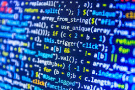

Computer science and engineering (CSE) is an academic program at some universities that integrates the fields of computer engineering and computer science. It is a sub-field of electronics engineering, focusing the digital electronics domain with added courses in
CSE programs also include core subjects of computer science such as theory of computation, design and analysis of algorithms, data structures and database systems. The program aims at designing, developing and troubleshooting computing devices and systems (such as personal computers, supercomputers, robots, smartphones, networking devices, embedded devices), focusing the underlying fundamental issues (like processor architecture design, operating system design, memory management, digital system design, communication protocol design, system software development, application software development and database management) in the most efficient and effective way. Emerging technologies like artificial intelligence, machine learning and data science are also covered under these programs.
Computer science programs typically centers primarily around theory and software, with only some hardware[1]; upper division courses tend to allow a lot of freedom to specialize in software and theory related areas (e.g. algorithms, artificial intelligence, cryptography/security, graphics/visualization, numerical and symbolic computing, operating systems/distributed processing, software engineering). Computer engineering programs tend to resemble computer science at the lower division with similar introductory programming and math courses, but diverges from computer science at the upper division with heavy electrical engineering requirements (e.g. digital and analog circuits, integrated circuit design, VLSI design and control systems). Despite the overlap with computer science at the lower division level, computer engineering skews much more heavily toward the electronics side that it has more in common with electrical engineering.
Computer science engineering (CSE) is one of the popular courses among engineering aspirants which focuses on the basic elements of computer programming and networking. Students pursuing computer science courses will gain knowledge of design, implementation and management of information system of both hardware and software. Going by the name, CSE course deals primarily with the theory of computation and design of computational systems. The course is offered across the globe in technical institutions at undergraduate as well as postgraduate levels awarding B.Tech and M.tech degrees, respectively.